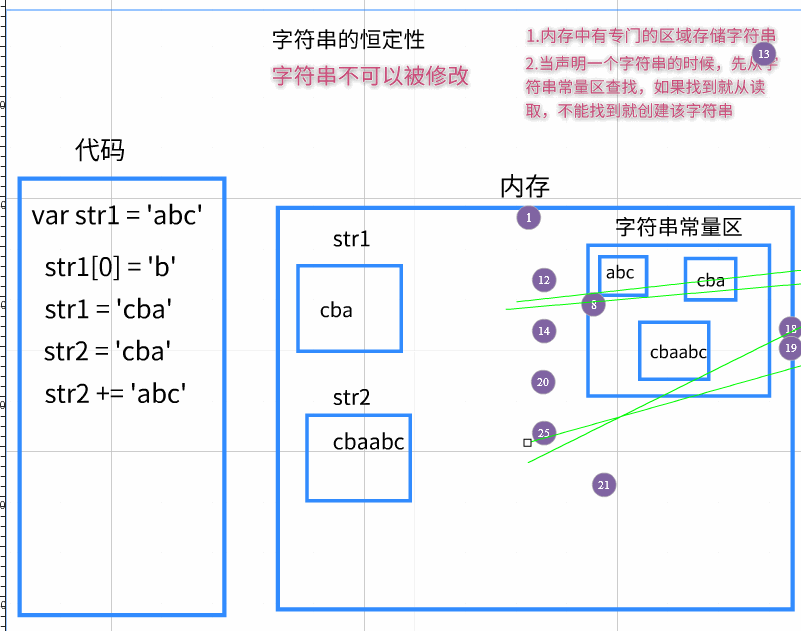
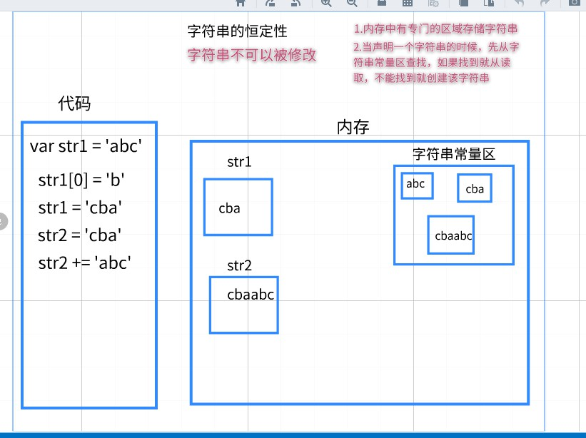

String对象介绍
1.1-字符串恒定性
字符串恒定性：字符串不可以被修改的
- 一般调用字符串api的时候使用新的变量来接收
字符串恒定性原理
- 1.在内存中有一块专门的内存空间区域负责存储字符串(字符串常量区)
- 2.当我们声明一个字符串的时候，编译器会先去这个区域寻找有没有该字符串，如果有就直接取出来，没有就新开辟空间
- 相当于缓存机制
- 3.这块内存空间中的字符串一旦被创建，是不可以被修改的
字符串恒定性注意点
- （1）
var str1 = 'abc'- 先去字符串常量区寻找有没有叫做abc的字符串，没有就创建
- (2)
str1[0] = 'b'- 修改无效
- (3)
str1 = 'cba';- 修改有效，因为我修改的是str1这个变量存储的数据，而不是改abc这个字符串
- (4)
var str2 = 'cba'- 这行代码效率极高，相当于
str2 = str1，编译器不会重新开辟内存空间，而是从已有的字符串中寻找
- 这行代码效率极高，相当于
- (5)
str2 += 'abc'- 可以修改，这行代码相当于将
'cba' + 'abc'拼接之后的新字符串赋值给str2
- 可以修改，这行代码相当于将
- （1）
<script>
//string恒定性：字符串是不可以被修改的
//验证:字符串是不可以被修改的
var str = '坤哥我爱你';
str[3] = '恨';
console.log ( str );
//结论：调用字符串任何的API的时候，都用新的字符串去接收
var str1 = str.replace('我爱你','么么哒');
//生成一个新的 坤哥么么哒
console.log ( str1 );//字符串的任何API都是返回一个新的字符串，不能改变自身的
console.log ( str );//字符串不可修改
//容易混淆：遍历赋值操作与字符串恒定性搞混淆
var s1 = 'abc';
s1 += 'bbb';//这行代码的意思不是去修改abc，而是将abc+bbb拼接的新字符串赋值给s1
console.log ( s1 );//abcbbb
</script>
1.2-字符串常用API介绍
- 1.获取字符串长度:
str.length - 2.获取字符串某一个下标字符:
str.charAt() - 3.拼接字符串:
str.concat - 4.判断字符串中是否包含某些字符串:
str.indexOf() - 5.截取字符串:
str.substr() - 6.修改字符串:
str.replace() - 7.大小写转换:
str.toLowerCase()小写str.toUpperCase()大写 - 8.分隔字符串：
str.split()
<script>
//字符串常用API介绍
var str = "黑马颜值担当坤哥我爱你么么哒!";
//1 获取字符串长度
var length = str.length;
console.log ( length );//15
//2 获取字符串某一个下标字符 （字符串相当于一个伪数组）
console.log ( str[ 4 ] );//担
console.log ( str.charAt(4) );//担 charAt(下标)函数相当于`字符串[下标]`
//3 拼接字符串
var str1 = str.concat("今晚一起吃鸡");//这行代码等价于 var str1 = str + "今晚一起吃鸡";
console.log ( str );
console.log ( str1 );//
//4 判断一个字符串在不在某个字符串里面
var index1 = str.indexOf("黑马");//如果存在，则返回参数字符串首字母所在的下标
var index2 = str.indexOf("坤");
var index3 = str.indexOf("林利群");//如果不存在，则返回 -1
console.log ( index1, index2, index3 );//0,6,-1
//5 截取字符串 第一个参数：从哪个下标开始截取 第二个参数：截取的长度
var str2 = str.substr(2,4);//颜值担当
console.log ( str2 );
//6 修改字符串 第一个参数：要修改的字符串 第二个参数：修改后的字符串
var str3 = str.replace("黑马","传智播客");
console.log ( str );//
console.log ( str3 );//传智播客颜值担当坤哥我爱你么么哒!
//7 大小写转换 (只有英文才有大小写，中文不存在大小写)
console.log ( "AKlkshflsLKJHDHL".toLowerCase () );//转为小写 aklkshflslkjhdhl
console.log ( "AKlkshflsLKJHDHL".toUpperCase () );//转为大写 AKLKSHFLSLKJHDHL
console.log ( "中文不存在大小写".toLowerCase () );//转为小写
//8 分隔字符串:将字符串按照指定的符号分隔，得到一个数组
var str4 = "我&爱&你";
//这个函数的返回值一定是一个数组
var arry = str4.split("&");//以&符号分隔字符串 [我,爱,你]
console.log ( arry );// [我,爱,你]
console.log ( str4.split ( ":" ) );//["我&爱&你"] 如果字符串中没有这个分隔符 也会得到一个数组
</script>

